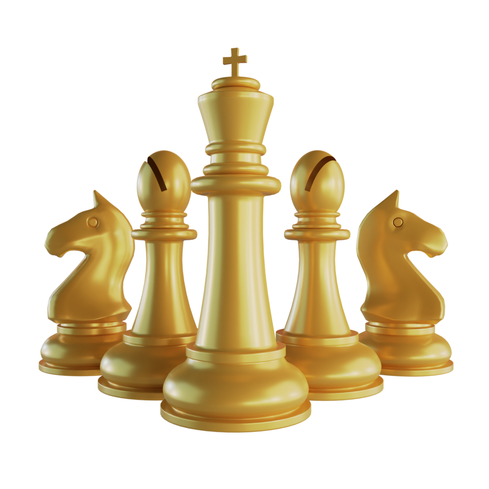
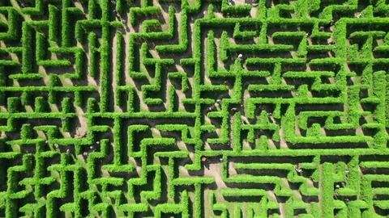

Mijn Projecten
Hier zijn enkele projecten waar ik tijdens mijn opleiding aan heb gewerkt. Deze projecten tonen mijn vermogen om problemen op te lossen en moderne webdesign principes toe te passen.

🎮 Hoger Lager
Een interactieve game waarin spelers moeten raden welke object duurder is. Gemaakt met HTML, CSS en JavaScript.

♟️ Schaken
Een browser-gebaseerd schaakspel waarin spelers kunnen schaken met een functioneel bord en stukken. Gemaakt met JavaScript en CSS.

♟️ Schaken
Een browser-gebaseerd schaakspel waarin spelers kunnen schaken met een functioneel bord en stukken. Gemaakt met PHP en CSS.

♟️ Schaken
Een browser-gebaseerd schaakspel waarin spelers kunnen schaken met een functioneel bord en stukken. Gemaakt met PHP en CSS.